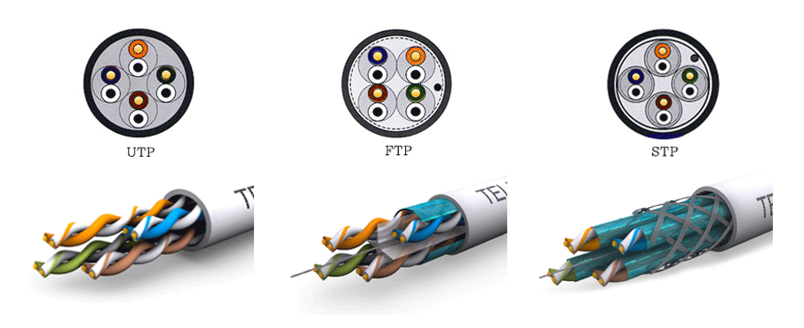

Medios de transmisión guiados
Medios de transmisión guiados
Medios magnéticos
Una de las formas más comunes para transportar datos de una computadora a otra es almacenarlos en cinta magnética o medios removibles (por ejemplo, DVD regrabables), transportar físicamente la cinta o los discos a la máquina de destino y leerlos de nuevo. Aunque este método no es tan sofisticado como usar un satélite de comunicación geosíncrono, a menudo es mucho más rentable, en especial para las aplicaciones en las que el ancho de banda alto o el costo por bit transportado es el factor clave.
A. S. Tanenbaum (Redes de computadoras, 5ª edición)
Cable coaxial
El cable coaxial es un cable utilizado para transportar señales eléctricas de alta frecuencia que posee dos conductores concéntricos, uno central, llamado núcleo (D), encargado de llevar la información, y uno exterior, de aspecto tubular, llamado malla, blindaje o trenza (B), que sirve como referencia de tierra y retorno de las corrientes. Entre ambos se encuentra una capa aislante llamada dieléctrico (C), de cuyas características dependerá principalmente la calidad del cable. Todo el conjunto suele estar protegido por una cubierta aislante (A).
El cable coaxial se utiliza sobretodo para llevar la señal de antena a la televisión y antiguamente se utilizaba en redes con topología de bus (veremos mas adelante que es una topología) aunque hoy en día algunos operadores de internet (ISP) utilizan cable coaxial en el último tramo de la instalación de fibra óptica en el hogar.
Dado su escaso uso en el tema que nos ocupa no estudiaremos los conectores.
Cable de par trenzado
El cable de par trenzado consiste en grupos de hilos de cobre entrelazados en pares en forma helicoidal. Esto se hace porque dos alambres paralelos constituyen una antena simple. Cuando se entrelazan los alambres helicoidalmente, las ondas se cancelan, por lo que la interferencia producida por los mismos es reducida lo que permite una mejor transmisión de datos.
Así, la forma entrelazada permite reducir la interferencia eléctrica tanto exterior como de pares cercanos y permite transmitir datos de forma más fiable. Un cable de par trenzado está formado por un grupo de pares entrelazados (normalmente 2, 4 o 25 pares), recubiertos por un material aislante. Cada uno de estos pares se identifica mediante un color.
https://es.wikipedia.org/wiki/Cable_de_par_trenzado#targetText=As%C3%AD%2C%20la%20forma%20entrelazada%20permite,recubiertos%20por%20un%20material%20aislante.
El cable de par trenzado permite transmitir tanto información analógica como digital.
(foto de cable)
Tipos de cables de par trenzado
Aunque existen muchos tipos de cables de par trenzado nosotros vamos a estudiar únicamente 3 variedades que son las siguientes:
- UTP:
Par trenzado no blindado (en inglés: unshielded twisted pair o UTP) es un tipo de cable de par trenzado que no se encuentra blindado y que se utiliza principalmente para comunicaciones.
https://es.wikipedia.org/wiki/Par_trenzado_no_blindado
- STP:
El par trenzado blindado o par trenzado apantallado (en inglés: Shielded Twisted Pair o STP) es un cable de par trenzado similar al Unshielded Twisted Pair (UTP) con la diferencia de que cada par tiene una pantalla protectora, además de tener una lámina externa de aluminio o de cobre trenzado alrededor del conjunto de pares, diseñada para reducir la absorción del ruido eléctrico.
El cable STP es más costoso y difícil de manipular que el cable sin blindaje o sin apantallar.
https://es.wikipedia.org/wiki/Par_trenzado_blindado
- FTP:
(Foiled Twisted Pair- Par trenzado con pantalla global) En este tipo de cable como en el UTP, sus pares no están apantallados, pero sí dispone de una apantalla global para mejorar su nivel de protección ante interferencias externas.
Tiene un precio intermedio entre el UTP y STP.
https://www.telecocable.com/blog/diferencias-entre-cable-utp-stp-y-ftp/1374

Categoría del cable de par trenzado
Según la calidad del cable este se encuentra en una categoría u otra.
En función de para que vayamos a utilizar el cable utilizaremos el de una categoría u otra. Por norma general a mayor categoría mayor calidad y precio del cable.
A nivel del instalaciones de red hay que tener en cuenta las necesidades de la instalación que estamos montando para utilizar un cableado u otro. Como norma general, en una instalación nueva que hagamos a fecha de hoy la categoría que habría que utilizar sería como mínimo categoría 5e.
En el siguiente enlace tenemos un listado de las diferentes categorías de cable existentes y para que deberíamos utilizar cada una de ellas.
Conectores
Los conectores que utilizaremos con el cable de red son conectores de tipo RJ.
En el tema que nos ocupa, las redes, utilizaremos concretamente conectores de tipo RJ45.
Existen en su versión macho

Y en su versión hembra (también llamados roseta)
Realizaremos nuestros propios cables de red para lo cual tendremos que aprendernos el código de colores que la norma establece.
Cable de fibra óptica
(imagen)
La fibra óptica se utiliza para la transmisión de larga distancia en las redes troncales, las redes LAN de alta velocidad (aunque hasta ahora el cobre siempre ha logrado ponerse a la par) y el acceso a Internet de alta velocidad como FTTH (Fibra para el Hogar, del inglés Fiber To The Home). Un sistema de transmisión óptico tiene tres componentes clave: la fuente de luz, el medio de transmisión y el detector. Por convención, un pulso de luz indica un bit 1 y la ausencia de luz indica un bit 0. El medio de transmisión es una fibra de vidrio ultradelgada. El detector genera un pulso eléctrico cuando la luz incide en él. Al conectar una fuente de luz a un extremo de una fibra óptica y un detector al otro extremo, tenemos un sistema de transmisión de datos unidireccional que acepta una señal eléctrica, la convierte y la transmite mediante pulsos de luz, y después reconvierte la salida a una señal eléctrica en el extremo receptor.
Este sistema de transmisión tendría fugas de luz y sería inútil en la práctica si no fuera por un interesante principio de la física. Cuando un rayo de luz pasa de un medio a otro (por ejemplo, de sílice fundida al aire), el rayo se refracta (dobla) en el límite la sílice y el aire
A. S. Tanenbaum (Redes de computadoras, 5ª edición)
Los cables de fibra óptica son similares a los coaxiales, excepto por el trenzado. En la figura 2-8(a) aparece una fibra óptica individual, vista de lado. Al centro se encuentra el núcleo de vidrio, a través del cual se propaga la luz.
El núcleo está rodeado de un revestimiento de vidrio con un índice de refracción más bajo que el del núcleo, con el fin de mantener toda la luz en el núcleo. Después viene una cubierta delgada de plástico para proteger el revestimiento. Por lo general las fibras se agrupan en haces, protegidas por una funda exterior. La figura 2-8(b) muestra una funda con tres fibras.
A. S. Tanenbaum (Redes de computadoras, 5ª edición)
Tipos de cables de fibra óptica
Existen 2 tipos de fibra óptica:
- Fibra óptica multimodo: Si por un cable de fibra óptica la luz viaja rebotando nos encontramos ante un cable de fibra óptica multimodo. Por estos cables puedes estar circulando varios cables al mismo tiempo siempre y cuando tengan modos distintos.
- Fibra óptica monomodo: Cuando el cable es lo suficientemente fino el cable en lugar de viajar rebotando lo hace de "modo guiado" por el interior del cable. En este caso únicamente puede circular 1 rayo al mismo tiempo.
La fibra óptica monomodo es más rápida y cara. Se utiliza para cubrir largas distancias.
En el siguiente vídeo podemos ver una serie de experimentos que nos permiten comprender la refracción de la luz en la fibra óptica:
Comparación entre fibra óptica y el par trenzado
De nuevo, en el libro Redes de computadoras de A. S. Tanenbaum hacen una comparación que no deberíamos dejar de lado:
Es ilustrativo comparar la fibra con el cobre. La fibra tiene muchas ventajas. Para empezar, puede manejar anchos de banda mucho mayores que el cobre. Tan sólo por esto sería indispensable en las redes de alto rendimiento. Debido a la baja atenuación, sólo se necesitan repetidores aproximadamente cada 50 km en líneas extensas, mientras que el cobre requiere repetidores cada 5 km, lo cual implica un ahorro considerable en el costo. La fibra también tiene la ventaja de que no le afectan las sobrecargas de energía, la interferencia electromagnética ni los cortes en el suministro de energía. Tampoco le afectan las sustancias corrosivas en el aire, lo cual es importante en los ambientes industriales pesados.
Por extraño que parezca, a las compañías telefónicas les gusta la fibra por una razón distinta: es delgada y ligera. Muchos conductos de cables existentes están llenos por completo, de modo que no hay espacio para agregar más capacidad. Si se quita todo el cobre y se sustituye por fibra se vacían los con- ductos, además de que el cobre tiene un excelente valor de reventa para las refinerías de cobre, quienes lo ven como materia prima de alta calidad. Asimismo, la fibra es mucho más ligera que el cobre. (...) Por último, las fibras no tienen fugas de luz y son difíciles de intervenir. Estas propiedades les confieren una excelente seguridad contra los potenciales espías.
Sin embargo, la fibra es una tecnología poco familiar que requiere habilidades que no todos los ingenieros tienen, además se pueden dañar con facilidad si se les dobla demasiado. Como la transmisión óptica es unidireccional por naturaleza, para la comunicación en ambos sentidos se requieren ya sea dos fibras o dos bandas de frecuencia en una fibra. Por último, las interfaces de las fibras cuestan más que las interfaces eléctricas. Sin embargo, el futuro de todas las comunicaciones fijas de datos a distancias, de algo más que unos cuantos metros, en definitiva está en la fibra. (...)
A.S.Tanenbaum (Redes de computadoras, 5ª edición)